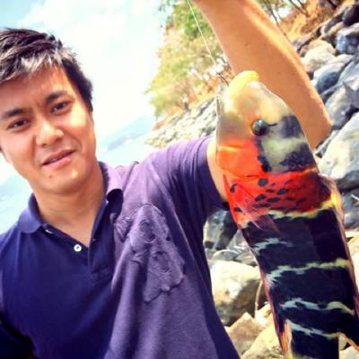

<!DOCTYPE html>
<html lang="en"><meta charset="utf-8"><meta name="generator" content="Hugo 0.92.0" /><meta name="viewport" content="width=device-width,initial-scale=1,viewport-fit=cover">
<meta name="color-scheme" content="light dark">
<meta name="supported-color-schemes" content="light dark"><meta name="twitter:card" content="summary"/>
<meta name="twitter:image" content="https://manabu.tech/manabu-cover.png"/>

<meta name="twitter:title" content=""/>
<meta name="twitter:description" content="自己紹介 田中学二 (Gakuji Tanaka) 奄美大島出身の釣り好きです。 現在、家族は関西にいて東京で単身赴任中です。 なんと！現在、嫁の実家近くに平屋を建てて住んで"/>
<meta property="og:title" content="" />
<meta property="og:description" content="自己紹介 田中学二 (Gakuji Tanaka) 奄美大島出身の釣り好きです。 現在、家族は関西にいて東京で単身赴任中です。 なんと！現在、嫁の実家近くに平屋を建てて住んで" />
<meta property="og:type" content="article" />
<meta property="og:url" content="/about/" /><meta property="og:image" content="https://manabu.tech/manabu-cover.png" /><meta property="article:section" content="" />


<title>Manabu.tech&nbsp;&ndash;&nbsp;Power of your smile</title><link rel="stylesheet" href="/css/core.min.3accd2ecb4aa46a1e0c8fecb0c58d22c8f541ee234e5af6812770f29d02ddc2147fa7f82d8a2e9ceb318f39d4a5f0376.css" integrity="sha384-OszS7LSqRqHgyP7LDFjSLI9UHuI05a9oEncPKdAt3CFH&#43;n&#43;C2KLpzrMY851KXwN2"><link rel="shortcut icon" href="/images/favicon.ico" />
<body>
    <div class="base-body"><section id="header" class="site header max-body-width">
    <div class="header wrap"><span class="header left-side"><a class="site home" href="/"><span class="site name">Manabu.tech</span></a></span>
        <span class="header right-side"><div class="nav wrap"><nav class="nav"><a class="nav item" href="/categories">Categories</a><a class="nav item" href="/tags">Tags</a><a class="nav item" href="/about">About me</a></nav></div></span></div><div class="site slogan"><span class="title">Power of your smile</span></div></section><div id="content" class="max-body-width"><section class="article header">
    <h1 class="article title"></h1></section><article class="article markdown-body"><h1 id="自己紹介">自己紹介</h1>
<div align="left">

<script type="text/javascript" src="https://platform.linkedin.com/badges/js/profile.js" async defer></script>
</div>
<p><b>田中学二 (Gakuji Tanaka)</b><br>
奄美大島出身の釣り好きです。
<del>現在、家族は関西にいて東京で単身赴任中です。</del>
なんと！現在、嫁の実家近くに平屋を建てて住んでおります！
田舎育ちなのか人前にでるのが苦手で基本的にインドア派です。
ただ、住んでいる環境が代わり減りましたがが自然も好きで釣りに行ったりします。
後、お誘い頂ければ何処にでも出没します。文章も苦手ですが、品質保証の事、テストの事、マネージメントの事や日々想う事を書いていきますので時間ある時にでも眺めて頂ければと。　　</p>
<h1 id="活動履歴">活動履歴</h1>
<p>2021/06/26 : <a href="http://jasst.jp/symposium/jasst21kansai/report.html#S5"target="_blank">JaSST'21 関西で招待講演で登壇</a></p>
<p>2018/12/17 : [インスタンスゼロ株式会社を共同創業] (<a href="https://ins0.jp/"target="_blank">https://ins0.jp/</a>)</p>
<p>2017/11/01 : [株式会社TSUMUGU創業] (<a href="https://tsumugu-inc.com"target="_blank">https://tsumugu-inc.com</a>)</p>
<p>2015/06/26 : <a href="http://www.jasst.jp/symposium/jasst15kansai/details.html#S5-1"target="_blank">JaSST'15 関西で招待講演で登壇</a></p>
<p>2013/08/02 : <a href="http://www.jasst.jp/symposium/jasst13kansai/details.html#S3-C2"target="_blank">JaSST'13 関西で事例発表で登壇</a></p>
<p>2012/08/02 : <a href="http://www.jasst.jp/symposium/jasst12kansai/report.html#workshop"target="_blank">JaSST'12 関西でワークショップで登壇</a></p>
<p>2010/6/12 : <a href="https://wacate.jp/workshops/2010summer/gaiyo/"target="_blank">WACATE2010 夏</a>に参加</p>
<p>2009/6/13 : <a href="https://wacate.jp/workshops/2009summer/gaiyo/"target="_blank">WACATE2009 夏</a>に参加「<a href="https://wacate.jp/wp-content/uploads/2019/02/WACATE-Magazine-007.pdf"target="_blank">最優秀賞貰った!!</a>」</p>
<h1 id="経歴">経歴</h1>
<p><strong><a href="https://ubie.life/"target="_blank">株式会社Ubie</a></strong></br>
2022年12月-present</br>
Quality Assuarance Engineer</p>
<p><strong><a href="https://jp.merpay.com/"target="_blank">株式会社メルペイ</a></strong></br>
2019年03月-present</br>
QA Engineering Manager / QA MOM</br>
2021年11月-present</br>
業務委託：Merpay QA支援全般</br></p>
<p><strong><a href="https://jp.merpay.com/"target="_blank">インスタンスゼロ株式会社</a></strong></br>
2018年12月-present</br>
General Manager / CO-Founder</br></p>
<p><strong><a href="https://www.lmi.ne.jp/services/totalsolution/teamwork-cloud.html"target="_blank">株式会社Oneteam</a></strong></br>
2018年04月-2019年02月</br>
Chief product Officer(CPO)/QA責任者</br></p>
<p><strong><a href="https://jp.merpay.com/"target="_blank">株式会社TSUMUGU</a></strong></br>
2017年11月-present</br>
QA Engineer / Owner</br></p>
<p><strong><a href="https://www.valtes-mt.co.jp/"target="_blank">バルテス株式会社</a></strong></br>
2017年04月-2018年03月</br>
バルテスモバイルテクノロジー株式会社 担当部長</br></p>
<p><strong><a href="https://www.klab.com/jp/"target="_blank">KLab株式会社</a></strong></br>
2013年11月-2017年03月</br>
KLab Cyscorpions.Inc</br>
QA senior Manager</br></p>
<p><strong><a href="https://www.ditgroup.jp/"target="_blank">デジタル・インフォメーション・テクノロジー株式会社</a></strong></br>
2006年12月-2013年10月</br>
クオリティエンジニアリングカンパニー</br>
ジェネラルマネージャー</br></p>
<p><strong><a href="https://www.alpsgiken.co.jp/"target="_blank">株式会社アルプス技研</a></strong></br>
2001年04月ー2006年11月</br>
三洋テレコミュニケーションズに派遣</br>
QAエンジニア</br></p>
<hr>
<div class="LI-profile-badge"  data-version="v1" data-size="medium" data-locale="en_US" data-type="horizontal" data-theme="light" data-vanity="gakuji-tanaka-083856b5"><a class="LI-simple-link" href='https://jp.linkedin.com/in/gakuji-tanaka-083856b5?trk=profile-badge'>GAKUJI Tanaka</a></div>
</article></div><section id="footer" class="footer max-body-width"><div class="footer-wrap">
    <p class="copyright">©2022 Manabu tech.</p>
    <p class="powerby"><span>Powered by </span><a href="https://gohugo.io" 
        target="_blank">Hugo</a><span> and the </span><a href="https://themes.gohugo.io/hugo-notepadium/" 
        target="_blank">Notepadium</a></p>
</div></section>
<script type="application/javascript">
var doNotTrack = false;
if (!doNotTrack) {
	window.ga=window.ga||function(){(ga.q=ga.q||[]).push(arguments)};ga.l=+new Date;
	ga('create', 'UA-92916914-1', 'auto');
	
	ga('send', 'pageview');
}
</script>
<script async src='https://www.google-analytics.com/analytics.js'></script>
</div>
</body>

</html>